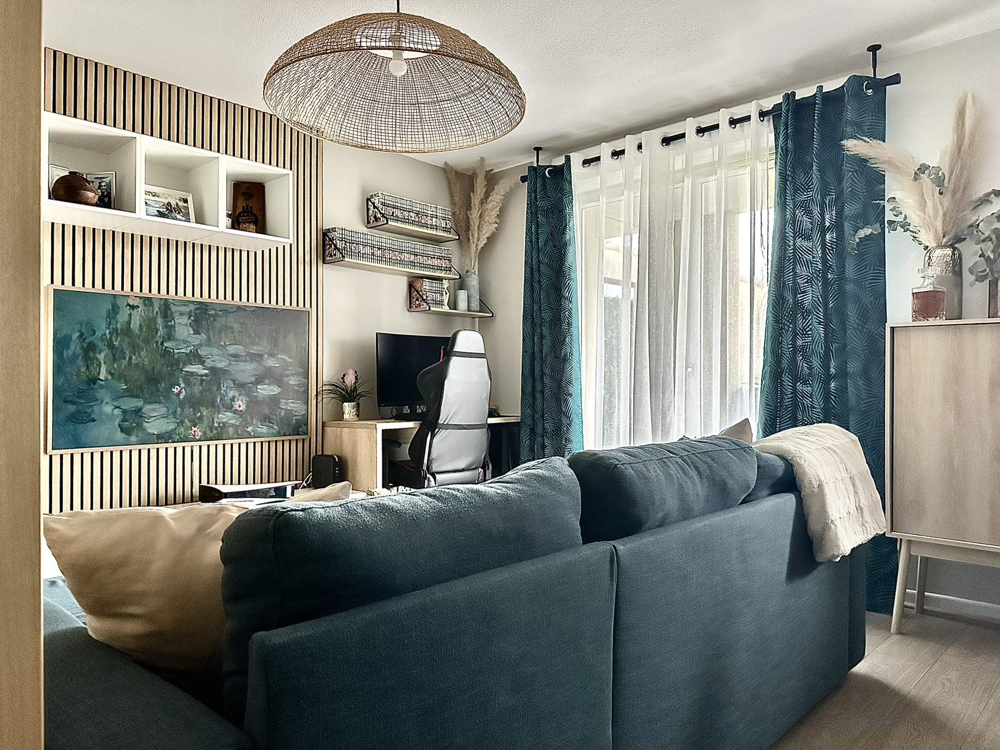
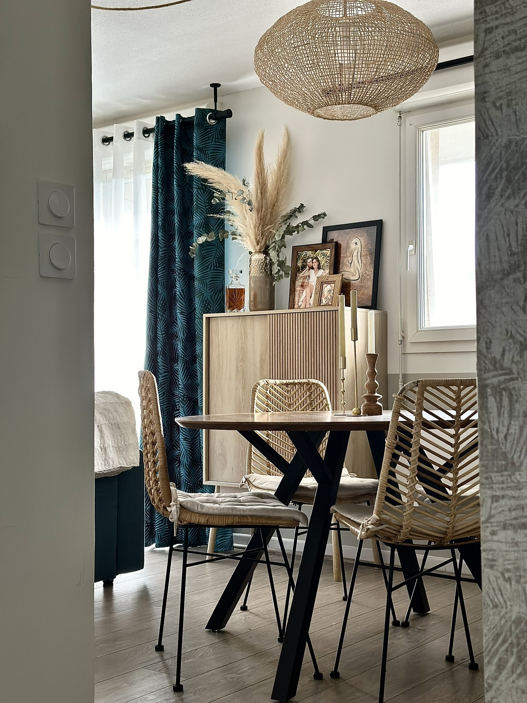
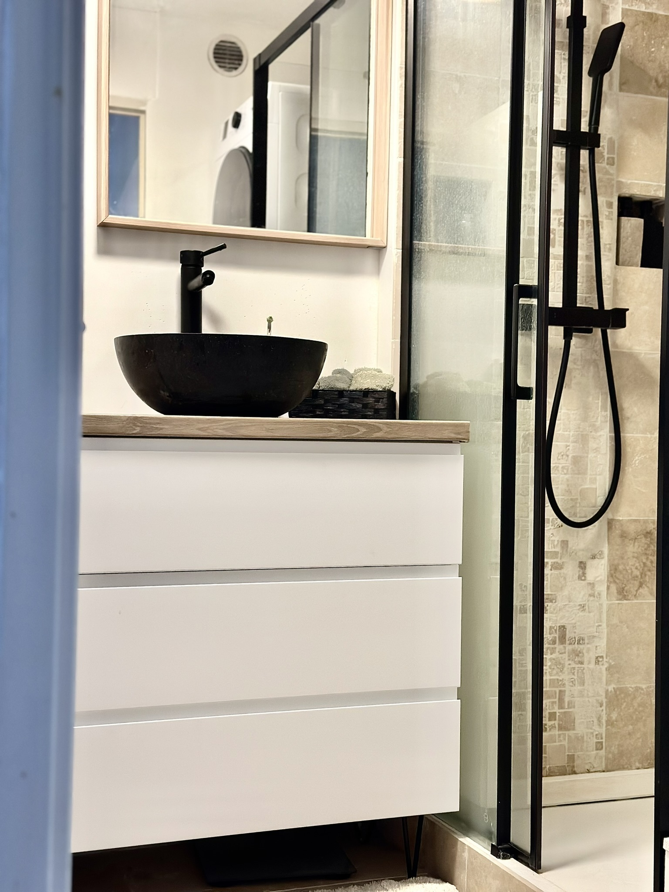

Un appartement chaleureux - Montbeton (82)
×




Un appartement T3 optimisé à Montbeton
Outre la gestion des travaux d’agencement, le cahier des charges englobait la création d’une ambiance contemporaine, conviviale et chaleureuse, idéale pour accueillir famille et amis.L’ambiance souhaitée devait être résolument contemporaine, avec une touche d’exotisme et de naturel pour s’harmoniser avec divers éléments décoratifs provenant d’autres horizons. La palette de couleurs choisie est intemporelle, avec une base d’écru et de grège associée à des matériaux tels que le bois, le rotin et des fibres végétales. Selon les pièces, une couleur prédominante a été ajoutée pour dynamiser et créer du contraste.
Une pièce de vie optimisée
Dans cette pièce de vie de 23 m², le défi consistait à agencer les espaces salle à manger, salon, cuisine et bureau tout en conservant une délimitation visuelle sans sacrifier la luminosité. Un agencement délicat que l’architecte d’intérieur a relevé avec brio.À l’entrée de la pièce, une table ronde en bois en provenance d’Alinea fluidifie la circulation tout en instaurant une atmosphère conviviale. Des chaises en rotin ajoutent une touche exotique recherchée. Le salon, au centre de la pièce, est délimité par un parement WoodUpp positionné au milieu du mur, créant ainsi des espaces distincts pour le salon, le bureau à droite et la cuisine à gauche. Des éléments tels qu’un canapé bleu existant, des tables basses rondes gigognes en bois de La Redoute et un meuble TV blanc d’Ikea ont été judicieusement intégrés pour créer une ambiance harmonieuse.
Pour délimiter la cuisine du salon, un claustra de Leroy Merlin a été utilisé, offrant une solution esthétique et fonctionnelle. La peinture a également été utilisée comme élément de délimitation, avec une cuisine restée blanche, un bureau délimité par une peinture grège du sol au plafond, et des soubassements entre les deux pour guider le regard visuellement.
Les détails dans la décoration sont essentiels, et les suspensions ont été choisies pour contribuer à la délimitation des espaces. Un rail de spot dans la cuisine éclaire toute la longueur de celle-ci, tandis qu’une suspension au-dessus de la table et une au-dessus du salon créent une seconde source de lumière. Une lampe d’appoint ajoute une lumière d’ambiance sur le meuble TV. Des rideaux bleus aux motifs tropicaux s’accordent avec le canapé, tandis que des voilages blancs tamisent l’ambiance tout en conservant la luminosité. Des décorations murales rondes, provenant d’ici et d’ailleurs, habillent le mur derrière la table à manger et se marient avec les souvenirs de voyages des clients.
Une chambre parentale au naturel
La chambre parentale, initialement équipée d’un simple placard avec une porte coulissante renfermant le cumulus, a été repensée pour offrir davantage de rangement. Un pont de lit sur mesure en forme de L a été conçu pour remplacer le placard existant, du sol au plafond. Réalisé par l’Atelier QDA, ce nouveau meuble a été pensé pour ranger efficacement vêtements, valises, linge de lit et accessoires, tout en laissant le cumulus accessible dans un coin. Le lit coffre a été choisi pour optimiser l’espace de rangement.Du côté de la décoration, une touche de terracotta a été ajoutée à l’entrée de la chambre et au mur derrière le lit, offrant un aspect naturel rappelant la terre. Le placard, en blanc, contraste avec la peinture et est souligné par un cadre en bois pour apporter du contraste et de la chaleur. À la place d’une suspension décorative, un brasseur d’air décoratif avec éclairage a été installé pour éviter un ventilateur sur pied peu esthétique. Un rideau aspect lin, avec une tringle en bois, habille la fenêtre et finalise la décoration.
Des pièces d’eau pétries de caractère
Pour la salle de bain de 4 m², les clients souhaitaient du rangement, une machine à laver et éventuellement un sèche-linge, une douche, ainsi que tous les accessoires nécessaires. La baignoire existante a été transformée en douche pour libérer de l’espace, permettant l’installation d’une machine à laver et d’un sèche-linge superposé.Le meuble vasque standard de 60 cm a été remplacé par une composition sur mesure comprenant un meuble à trois tiroirs, un espace vide pour la panière à linge, un plan de toilette en bois avec une vasque posée, et un meuble de rangement allant jusqu’au plafond.
Pour l’ambiance, le carrelage blanc a été recouvert de travertin pour une touche chaleureuse et naturelle, en harmonie avec le plan de toilette en bois. Dans la douche, la faïence rouge bordeaux et blanc a cédé la place au travertin. Chaque accessoire a été choisi dans des teintes écru et beige, avec une touche de noir pour une ambiance contemporaine.
Mareva est convaincue que même les toilettes sont importantes dans la décoration. Ainsi, elle a transformé cette pièce initialement blanche en un espace élégant où l’on a désormais envie de passer du temps. Un soubassement noir encercle la pièce, tandis qu’un papier peint floral sur fond noir habille la partie haute. Au-dessus des toilettes, des étagères en bois permettent de disposer différents accessoires, tandis qu’un meuble suspendu offre un maximum de rangement. En guise de touche finale, un nuage de papier toilette fixé au mur ajoute une note originale et distinctive.